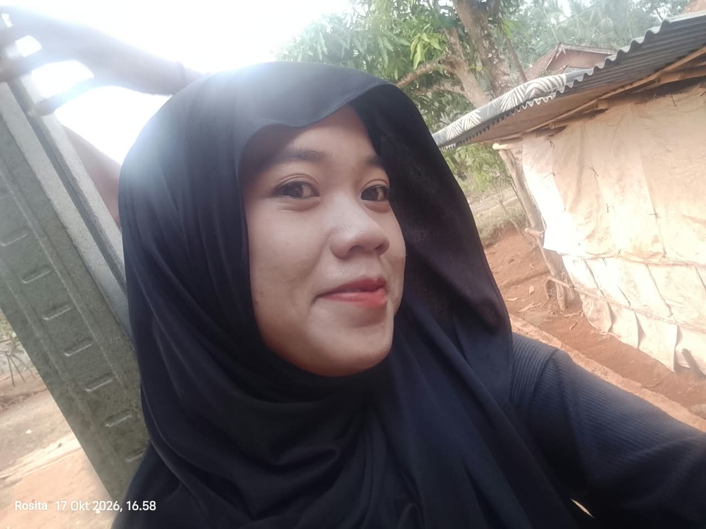

Selamat Datang di Profil Saya 🌸💗
NPM: 2584202020

Halo semuanya!
Perkenalkan, nama saya Rosita.
Saya berasal dari Kembang Gading.
Saya adalah mahasiswa
Universitas Muhammadiyah Kotabumi.
Asal daerah: Kembang Gading
Kampus: Universitas Muhammadiyah Kotabumi
Hobi: Menonton drama